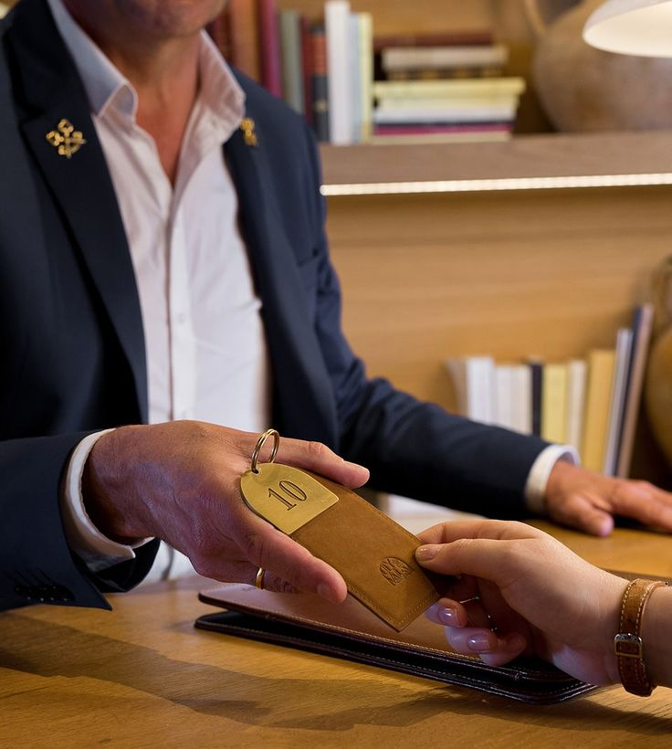

Welcome to Four Ferrets Travel
الأعمال التجارية التي تهدف إلى المال فقط هي أعمال قصيرة الأمد. هذا هو المبدأ الذي اعتمدته مجموعة فور فيرتس ترافل منذ أن بدأت أعمالها في جمهورية مصر العربية. بالتفاني في العمل الجماعي والالتزام بالتحسين المستمر، أصبحت شركتنا لا تنمو فحسب، بل تنمو بسرعة. ولهذا السبب، يسرنا أن نقدم المرحلة المزدهرة التي وصلت إليها مجموعتنا على مر السنين. بدأنا مكتبنا الأول في القاهرة، مصر، مع 15 فردًا من فريق الشباب الذين يعملون بجد وتفانٍ على مدار الساعة لبناء أساس قوي لمستقبل مالي مزدهر.
نحن لا ننمو فقط كفريق، ولكننا نلتزم بتقديم أفضل نوعية من الخدمة لعملائنا الكرام. نظراً لأننا اعتمدنا هذه الإدارة، فقد تطور فريق أكثر تفانياً وثورية داخل مجموعتنا، ومن المتوقع أن يصل عدد أعضائنا إلى 1500 عضو بحلول عام 2025.
الأهداف

تلتزم شركة فور فيرتس ترافل بتوفير مستقبل مزدهر، مع مراعاة تقديم أفضل نوعية من الخدمة، والتخطيط لبناء أساس مالي أكثر أماناً وقوة.
المهمة
نحن نكافح دائماً للحفاظ على مكانتنا كمجموعة مالية رائدة في سوق سريع النمو. مهمتنا هي تقديم تخطيط متطور، وتطوير لا هوادة فيه، وتسويق ثوري، ورضا خدمة لا يمكن إنكاره.
عميلنا العزيز من خلال الانضمام إلى برامجنا لمدة عامين أو أكثر، سيتمتع العميل بإقامة لمدة سبع أيام وست ليالي في فنادقنا في مكة المكرمة، بالإضافة إلى إقامة في أحد الفنادق الفاخرة الشريكة في المدينة المنورة لمدة ثلاث ليالي أخرى. كما نوفر برامج أخرى متنوعة تناسب جميع الأذواق والاحتياجات.
التخصص

فور فيرتس ترافل متخصصة في تنظيم العمرة العائلية إلى الأراضي المقدسة في مكة المكرمة والمدينة المنورة، باستخدام أفضل استراتيجيات التسويق والمبيعات الحديثة بمساعدة فريق من الخبراء والعاملين المتخصصين في خدمة الآلاف من المسلمين حول العالم الذين يسعون إلى الاستمتاع بزيارة الأراضي المقدسة، حيث يمكن للأباء نقل فرحة الإيمان إلى أطفالهم بينما يقومون بالعمرة ويصلون مع الآلاف من المسلمين الآخرين في المسجد الحرام.
خدمتنا
نحن لا نستمتع فقط بخدمة ضيوفنا، بل نعكس أيضًا تراثًا طويلًا من التقاليد والعمل الجاد في جميع فنادقنا في مكة المكرمة، التي تقع على مقربة من الكعبة المشرفة. نقدم عدد غرف كافٍ لتلبية احتياجات عملائنا، مع خدمات فندقية متكاملة، ومركز اتصالات مجهز بأجهزة حديثة واتصالات إنترنت، ومطاعم تقدم المأكولات العربية والدولية. الفنادق مجهزة بالكامل لراحة الضيوف من ذوي الاحتياجات الخاصة.
مميزات عند التعاقد

- الحصول على تأشيرة العمرة من خلال مكاتبنا على نفقة العميل.
- نقل مجاني من وإلى المطار في المملكة العربية السعودية عند إصدار التأشيرات من خلال الشركة.
- خصومات إضافية على النقل الداخلي بالمملكة العربية السعودية بأسعار مخفضة.
- المساعدة في حجز تذاكر الطيران للذهاب لأداء مناسك العمرة وإعادة تأكيد الحجز للرحلات العودة إلى أرض الوطن.